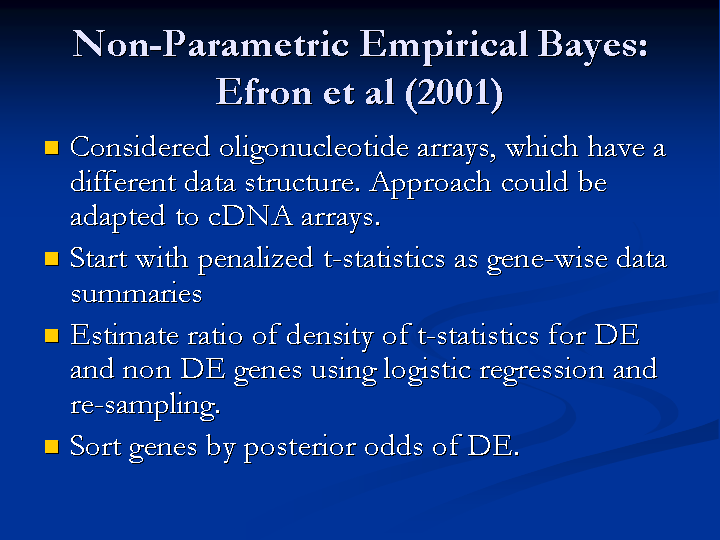

Judging Differential Expression in Microarray Experiments: Penalized t-statistics
Gordon Smyth Walter and Eliza Hall Institute
CBiS Microarray Workshop 12 July 2002, Australian National University
previous slide - Slide 16 - next slide
